My Tools¶
def add_vertex_monomials(G,method='default'):
if method=='alpha' and G.order() <= 10:
monomials_default=['a','b','c','d','e','f','g','h','i','j','k']
monomials=monomials_default[:G.order()]
else:
monomials=['a%s' %(i) for i in range(G.order())]
V=PolynomialRing(ZZ,names=monomials,order='invlex')
V.inject_variables()
if G.is_directed():
H = DiGraph()
else:
H = Graph()
for v in G.vertices():
H.add_vertex(V.gen(v))
for e in G.edges():
if e[0]<e[1]:
H.add_edge(V.gen(e[0]),V.gen(e[1]),e[2])
if G.is_directed():
H.add_edge(V.gen(e[1]),V.gen(e[0]),e[2])
return H
def add_edge_monomials(G,method='default',edge_vars=['a','b','c','d','e','f','g','h','i','j','k']):
#V=G.vertices()
#if method=='default' and V[0]==0: # e01, ... need vertices to be integers here
if method=='default': # e01, ... need vertices to be integers here
E=PolynomialRing(ZZ,G.order(),G.order(),var_array=['e'],order='invlex')
E.inject_variables()
for e in G.edges():
if e[0]<e[1]:
G.add_edge(e[0],e[1],E.gen(G.order()*e[0]+e[1]))
if G.is_directed():
G.add_edge(e[1],e[0],E.gen(G.order()*e[1]+e[0]))
else:
if G.is_directed():
edge_vars = edge_vars[:G.size()/2]
edge_vars_bar = [ ev+'bar' for ev in edge_vars ]
E=PolynomialRing(ZZ,names=edge_vars+edge_vars_bar,order='invlex')
E.inject_variables()
evars = list(E.gens()[:G.size()/2])
evars.reverse()
evars_bar = list(E.gens()[G.size()/2:])
evars_bar.reverse()
for e in G.edges():
if e[0]<e[1]:
G.add_edge(e[0],e[1],evars.pop())
G.add_edge(e[1],e[0],evars_bar.pop())
else:
edge_vars = edge_vars[:G.size()]
E=PolynomialRing(ZZ,names=edge_vars,order='invlex')
E.inject_variables()
evars = list(E.gens()[:G.order()])
evars.reverse()
for e in G.edges():
if e[0]<e[1]:
G.add_edge(e[0],e[1],evars.pop())
return G
def my_laplacian_matrix_old(G):
A=matrix(SR,G.order())
V=G.vertices()
for i in range(G.order()):
for j in range(G.order()):
if G.has_edge(V[i],V[j]):
A[i,j]=G.edge_label(V[i],V[j])
L=diagonal_matrix(sum(A))-A
return L
def combinatorial_laplacian(G,combinatorial_coefficients=False):
v=G.vertices()
A = matrix(SR, G.order(), lambda i,j: G.edge_label(v[i],v[j]) if G.has_edge(v[i],v[j]) else 0)
if combinatorial_coefficients:
for i in range(G.order()):
for j in range(G.order()):
if G.has_edge(v[i],v[j]):
A[i,j]=combinatorial_coefficient(v[i],v[j])*A[i,j]
D = diagonal_matrix(sum(A.transpose()))
L=D-A
return L
def tree_polynomial(G,root=1,combinatorial_coefficients=False):
L=combinatorial_laplacian(G,combinatorial_coefficients)
I=list(range(L.nrows()))
I.remove(root)
T=det(L[I,I]).expand()
return T
def coefficient_transition_context_from_reduced_graph_power(G,f,g):
#if not G.has_edge(f,g):
# print('***',f,g)
# return None, None, None, None
#else:
V=G.vertices()
elabel=G.edge_label(f,g)
coeff=elabel[0]
fr=elabel[1][0]
to=elabel[1][1]
context=elabel[2]
return coeff, (fr,to), context
def coefficient_transition_context_from_tuple(from_tuple,to_tuple):
if len(from_tuple)!=len(to_tuple):
raise ValueError('Tuples must be the same size.')
d=list(vector(to_tuple)-vector(from_tuple))
fr=d.index(-1)
to=d.index(1)
coeff=from_tuple[fr]
context=list(from_tuple)
context[fr]=context[fr]-1
return coeff, (fr,to), context
def Cartesian_power(G, k):
# Make Cartesian power G^k (unreduced)
Gk=G
for i in range(k-1):
Gk = Gk.cartesian_product(G)
# Make each vertex a tuple
vflat=list([0]*Gk.order())
for i in range(Gk.order()):
v=Gk.vertices()[i]
vflat[i]=tuple(flatten(v))
Gk.relabel(vflat)
return Gk
def reduced_Cartesian_power(G, k):
V=G.vertices()
if V[0]!=0: # construct reduced Cartesian power using monomials
f=1
for kk in range(k):
f=f*sum(G.vertices())
fmon = f.monomials()
fmon.reverse()
if G.is_directed():
Gk = DiGraph()
else:
Gk = Graph()
for fi in fmon:
for fj in fmon:
df=fj/fi
aj=df.numerator()
ai=df.denominator()
if G.has_edge(ai,aj):
coeff=fi.degree(ai)
if G.edge_label(ai,aj):
Gk.add_edge(fi,fj,(coeff,G.edge_label(ai,aj),fj.gcd(fi)))
else:
Gk.add_edge(fi,fj,(coeff,(ai,aj),fj.gcd(fi)))
#print(fi,fj,(ai,aj),fj.gcd(fi))
else: # construct reduced Cartesian power using tuples of integers
Gk = Cartesian_power(G,k) # reduced
for v in Gk.vertices(): # do reduction by merging vertices
for u in Gk.vertices():
sv=tuple(sorted(v))
su=tuple(sorted(u))
if v!=u and sv==su and v<u and Gk.has_vertex(v) and Gk.has_vertex(u):
Gk.merge_vertices([v,u])
vcount=[0]*Gk.order()
for i in range(Gk.order()):
vc=[0]*G.order() # yes, G, not Gk, the number of vertices in monomial model
for x in Gk.vertices()[i]:
vc[x]=vc[x]+1
vcount[i]=tuple(vc)
Gk.relabel(vcount)
for e in Gk.edges():
#print(e[0],e[1],coefficient_transition_context_from_tuple(e[0],e[1]))
Gk.set_edge_label(e[0],e[1],coefficient_transition_context_from_tuple(e[0],e[1]))
return Gk
Examples of using these tools on monomial receptor models¶
Variables from a polynomial ring added as edge labels. The default is show below.
import sage.graphs.graph_plot
sage.graphs.graph_plot.DEFAULT_SHOW_OPTIONS['figsize'] = [3,3]
sage.graphs.graph_plot.DEFAULT_SHOW_OPTIONS['transparent'] = true
G=graphs.CycleGraph(3)
G.add_edge(2,3)
G=add_edge_monomials(G)
G.show(edge_labels=true,layout='spring',edge_labels_background='cyan')
G.edges()
Defining e00, e01, e02, e03, e10, e11, e12, e13, e20, e21, e22, e23, e30, e31, e32, e33
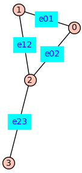
[(0, 1, e01), (0, 2, e02), (1, 2, e12), (2, 3, e23)]
Variables from a polynomial ring added as edge labels. Use method=’alpha’ fir easy-to-read variables.
G=add_edge_monomials(G,method='alpha')
G.show(figsize=3,edge_labels=true,layout='spring',edge_labels_background='cyan')
G.edges()
Defining a, b, c, d
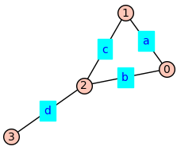
[(0, 1, a), (0, 2, b), (1, 2, c), (2, 3, d)]
The combinatorial_lapacian(G) function returns the Laplacian with the variables that label edges of graph G.
L=combinatorial_laplacian(G); L
[ a + b -a -b 0]
[ -a a + c -c 0]
[ -b -c b + c + d -d]
[ 0 0 -d d]
Similarly for the tree_polynomial(G) function.
T=tree_polynomial(G); T
a*b*d + a*c*d + b*c*d
Here I create a directed graph with default edge monomials and another with easy-to-read edge monomials.
D=graphs.CycleGraph(3)
D.add_edge(2,3)
D=D.to_directed()
D1=add_edge_monomials(D)
D1.show(figsize=6,edge_labels=true,layout='spring',edge_labels_background='cyan')
print(D1.edges())
D2=add_edge_monomials(D,method='alpha')
D2.show(figsize=6,edge_labels=true,layout='spring',edge_labels_background='cyan')
print(D2.edges())
Defining e00, e01, e02, e03, e10, e11, e12, e13, e20, e21, e22, e23, e30, e31, e32, e33
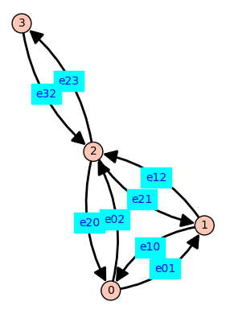
[(0, 1, e01), (0, 2, e02), (1, 0, e10), (1, 2, e12), (2, 0, e20), (2, 1, e21), (2, 3, e23), (3, 2, e32)]
Defining a, b, c, d, abar, bbar, cbar, dbar
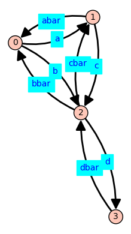
[(0, 1, a), (0, 2, b), (1, 0, abar), (1, 2, c), (2, 0, bbar), (2, 1, cbar), (2, 3, d), (3, 2, dbar)]
The combinatorial laplacian and tree polynomial using labeled arcs of symmetric directed graph \(D_2\).
print(combinatorial_laplacian(D2),'\n'*2,tree_polynomial(D2))
[ a + b -a -b 0]
[ -abar abar + c -c 0]
[ -bbar -cbar bbar + cbar + d -d]
[ 0 0 -dbar dbar]
a*bbar*dbar + a*cbar*dbar + b*cbar*dbar
Examples of dimer and higher-order oligomer receptor models.¶
The undirected reduced graph power \(C_3^{(2)}\):
G=graphs.CycleGraph(3)
G=add_vertex_monomials(G)
Gk = reduced_Cartesian_power(G, 3)
Gk.show(figsize=5)
Defining a0, a1, a2
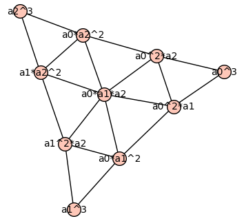
The symmetric directed version of \(C_3^{(2)}\). Each edge label is a 3-tuple: (coefficient, (origin, destination), context)
D=graphs.CycleGraph(3)
D=D.to_directed()
D=add_vertex_monomials(D)
Dk = reduced_Cartesian_power(D, 2)
Dk.show(figsize=10,edge_labels=true,edge_labels_background='cyan')
Defining a0, a1, a2
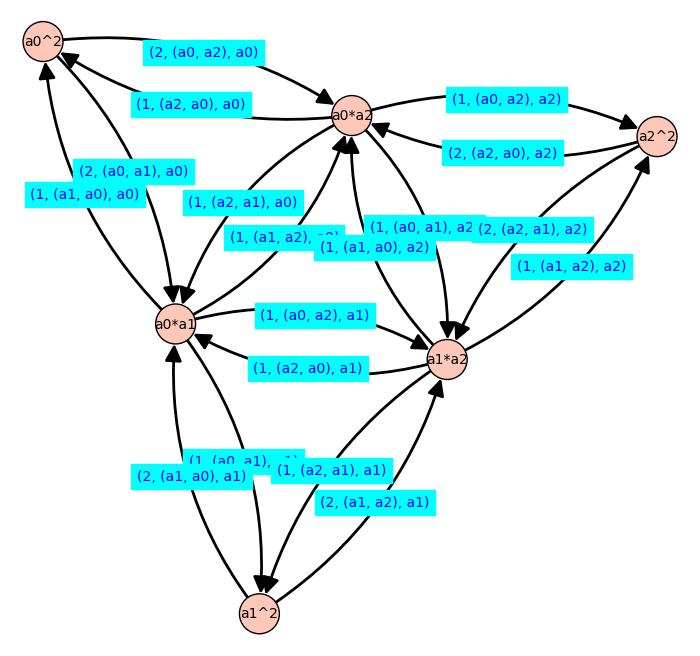
The symmetric directed version of \(C_5^{(3)}\). The coefficient_transition_context_from_reduced_graph_power function retrieves information about edge labels even though they are not plotted.
D=graphs.CycleGraph(5)
D=D.to_directed()
D=add_vertex_monomials(D)
Dk = reduced_Cartesian_power(D, 3)
vk1=0
vk2=0
while not Dk.has_edge(vk1,vk2):
vk1=Dk.random_vertex()
vk2=Dk.random_vertex()
print(vk1,vk2,coefficient_transition_context_from_reduced_graph_power(Dk,vk1,vk2))
Defining a0, a1, a2, a3, a4
a0*a1*a4 a0^2*a4 (1, (a1, a0), a0*a4)
The symmetric directed version of the unreduced Cartesian power \(P_n^{k}\). By default, the vertex labels are \(k\)-tuples, each element of which is the state \((0, 1, \ldots, n-1)\) of one of the \(k\) monomers.
n=5
k=3
Gk = Cartesian_power(graphs.PathGraph(5), 3)
print(Gk.vertices())
[(0, 0, 0), (0, 0, 1), (0, 0, 2), (0, 0, 3), (0, 0, 4), (0, 1, 0), (0, 1, 1), (0, 1, 2), (0, 1, 3), (0, 1, 4), (0, 2, 0), (0, 2, 1), (0, 2, 2), (0, 2, 3), (0, 2, 4), (0, 3, 0), (0, 3, 1), (0, 3, 2), (0, 3, 3), (0, 3, 4), (0, 4, 0), (0, 4, 1), (0, 4, 2), (0, 4, 3), (0, 4, 4), (1, 0, 0), (1, 0, 1), (1, 0, 2), (1, 0, 3), (1, 0, 4), (1, 1, 0), (1, 1, 1), (1, 1, 2), (1, 1, 3), (1, 1, 4), (1, 2, 0), (1, 2, 1), (1, 2, 2), (1, 2, 3), (1, 2, 4), (1, 3, 0), (1, 3, 1), (1, 3, 2), (1, 3, 3), (1, 3, 4), (1, 4, 0), (1, 4, 1), (1, 4, 2), (1, 4, 3), (1, 4, 4), (2, 0, 0), (2, 0, 1), (2, 0, 2), (2, 0, 3), (2, 0, 4), (2, 1, 0), (2, 1, 1), (2, 1, 2), (2, 1, 3), (2, 1, 4), (2, 2, 0), (2, 2, 1), (2, 2, 2), (2, 2, 3), (2, 2, 4), (2, 3, 0), (2, 3, 1), (2, 3, 2), (2, 3, 3), (2, 3, 4), (2, 4, 0), (2, 4, 1), (2, 4, 2), (2, 4, 3), (2, 4, 4), (3, 0, 0), (3, 0, 1), (3, 0, 2), (3, 0, 3), (3, 0, 4), (3, 1, 0), (3, 1, 1), (3, 1, 2), (3, 1, 3), (3, 1, 4), (3, 2, 0), (3, 2, 1), (3, 2, 2), (3, 2, 3), (3, 2, 4), (3, 3, 0), (3, 3, 1), (3, 3, 2), (3, 3, 3), (3, 3, 4), (3, 4, 0), (3, 4, 1), (3, 4, 2), (3, 4, 3), (3, 4, 4), (4, 0, 0), (4, 0, 1), (4, 0, 2), (4, 0, 3), (4, 0, 4), (4, 1, 0), (4, 1, 1), (4, 1, 2), (4, 1, 3), (4, 1, 4), (4, 2, 0), (4, 2, 1), (4, 2, 2), (4, 2, 3), (4, 2, 4), (4, 3, 0), (4, 3, 1), (4, 3, 2), (4, 3, 3), (4, 3, 4), (4, 4, 0), (4, 4, 1), (4, 4, 2), (4, 4, 3), (4, 4, 4)]
When the Cartesian power \(P_n^{k}\) is reduced to \(P_n^{(k)}\), the vertex labels are \(n\)-tuples, the \(i\)-th element of which is the number of monomers in the \(i\)-th state (a value from \(0\) to \(k\)).
Gk = reduced_Cartesian_power(graphs.PathGraph(n), k)
print(Gk.vertices())
[(0, 0, 0, 0, 3), (0, 0, 0, 1, 2), (0, 0, 0, 2, 1), (0, 0, 0, 3, 0), (0, 0, 1, 0, 2), (0, 0, 1, 1, 1), (0, 0, 1, 2, 0), (0, 0, 2, 0, 1), (0, 0, 2, 1, 0), (0, 0, 3, 0, 0), (0, 1, 0, 0, 2), (0, 1, 0, 1, 1), (0, 1, 0, 2, 0), (0, 1, 1, 0, 1), (0, 1, 1, 1, 0), (0, 1, 2, 0, 0), (0, 2, 0, 0, 1), (0, 2, 0, 1, 0), (0, 2, 1, 0, 0), (0, 3, 0, 0, 0), (1, 0, 0, 0, 2), (1, 0, 0, 1, 1), (1, 0, 0, 2, 0), (1, 0, 1, 0, 1), (1, 0, 1, 1, 0), (1, 0, 2, 0, 0), (1, 1, 0, 0, 1), (1, 1, 0, 1, 0), (1, 1, 1, 0, 0), (1, 2, 0, 0, 0), (2, 0, 0, 0, 1), (2, 0, 0, 1, 0), (2, 0, 1, 0, 0), (2, 1, 0, 0, 0), (3, 0, 0, 0, 0)]
Here I use \(C_5^{(3)}\) and return the coefficient, transition and context for a randomly selected edge.
D=graphs.CycleGraph(5)
D=D.to_directed()
Dk = reduced_Cartesian_power(D, 2)
ek = Dk.random_edge()
print('Transition', ek[0], 'to', ek[1], 'has')
print('has coefficient, transition, and context:')
print(coefficient_transition_context_from_reduced_graph_power(Dk,ek[0],ek[1]))
Transition (0, 2, 0, 0, 0) to (1, 1, 0, 0, 0) has
has coefficient, transition, and context:
(2, (1, 0), [0, 1, 0, 0, 0])
coefficient_transition_context_from_tuple((0,3,0),(1,2,0))
(3, (1, 0), [0, 2, 0])
print('These two function ought to return the same tuples:',\
coefficient_transition_context_from_reduced_graph_power(Dk,ek[0],ek[1])==coefficient_transition_context_from_tuple(ek[0],ek[1]))
These two function ought to return the same tuples: True
Spanning trees of receptor oligomers and contexts of transitions on monomer model¶
def my_random_spanning_tree(G,show=True,color='red'):
if G.is_directed():
print('Not yet')
else:
T=G.random_spanning_tree()
if show:
G.show(figsize=3,vertex_labels=false,vertex_size=20,edge_colors={color : T })
return T
Gk=reduced_Cartesian_power(add_vertex_monomials(graphs.CycleGraph(4)),3)
Tk=my_random_spanning_tree(Gk)
print(Tk)
Defining a0, a1, a2, a3
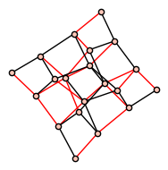
[(a0^3, a0^2*a3), (a0^2*a3, a0*a1*a3), (a0*a1*a3, a0*a1*a2), (a0*a1*a2, a0*a2^2), (a0*a1*a2, a1^2*a2), (a1^2*a2, a1*a2^2), (a1*a2^2, a1*a2*a3), (a1*a2*a3, a1*a3^2), (a1*a2*a3, a1^2*a3), (a1*a2^2, a2^3), (a1*a2*a3, a2^2*a3), (a0*a1*a3, a0^2*a1), (a1*a2*a3, a0*a2*a3), (a0*a2*a3, a0*a3^2), (a1*a3^2, a2*a3^2), (a2*a3^2, a3^3), (a0^2*a3, a0^2*a2), (a0^2*a1, a0*a1^2), (a0*a1^2, a1^3)]
G.delete_edges(G.edges())
G.allow_multiple_edges(new=true)
for ek in Tk:
coeff, transition, context = coefficient_transition_context_from_reduced_graph_power(Gk,ek[0],ek[1])
G.add_edge(transition[0],transition[1],context)
print(G.edges())
G.show(figsize=10,edge_labels=true,color_by_label=true)
[(a0, a1, a0*a1), (a0, a1, a1^2), (a0, a1, a1*a2), (a0, a1, a0*a3), (a0, a1, a2*a3), (a0, a3, a0^2), (a0, a3, a0*a1), (a1, a2, a0*a2), (a1, a2, a1*a2), (a1, a2, a2^2), (a1, a2, a1*a3), (a1, a2, a2*a3), (a1, a2, a3^2), (a2, a3, a0^2), (a2, a3, a0*a1), (a2, a3, a1*a2), (a2, a3, a0*a3), (a2, a3, a1*a3), (a2, a3, a3^2)]
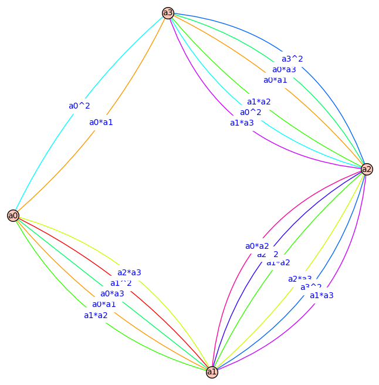
D=add_vertex_monomials(graphs.CycleGraph(4)).to_directed()
Dk = reduced_Cartesian_power(D, 2)
root_index=0
for Tk in list(Dk.in_branchings(Dk.vertices()[root_index],spanning=True))[0:4]:
D.delete_edges(D.edges())
D.allow_multiple_edges(new=true)
for ek in Tk.edges():
coeff, transition, context = coefficient_transition_context_from_reduced_graph_power(Tk,ek[0],ek[1])
D.add_edge(transition[0],transition[1],context)
print('\n',Tk.edges())
Dk.show(figsize=7,edge_colors={'red' : Tk.edges() },layout='spring')
print(D.edges())
D.show(figsize=7,edge_labels=true,color_by_label=true)
Defining a0, a1, a2, a3
[(a0*a1, a1*a3, (1, (a0, a3), a1)), (a1^2, a0*a1, (2, (a1, a0), a1)), (a0*a2, a0*a1, (1, (a2, a1), a0)), (a1*a2, a2^2, (1, (a1, a2), a2)), (a2^2, a2*a3, (2, (a2, a3), a2)), (a0*a3, a0^2, (1, (a3, a0), a0)), (a1*a3, a1*a2, (1, (a3, a2), a1)), (a2*a3, a3^2, (1, (a2, a3), a3)), (a3^2, a0*a3, (2, (a3, a0), a3))]
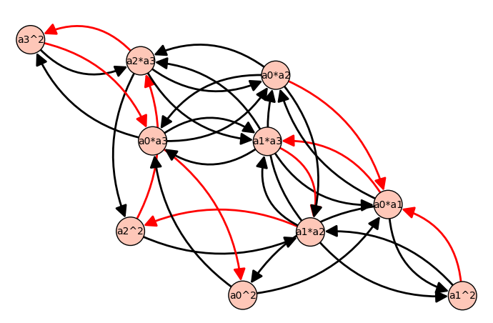
[(a0, a3, a1), (a1, a0, a1), (a1, a2, a2), (a2, a1, a0), (a2, a3, a2), (a2, a3, a3), (a3, a0, a0), (a3, a0, a3), (a3, a2, a1)]
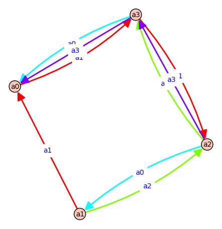
[(a0*a1, a1*a3, (1, (a0, a3), a1)), (a1^2, a0*a1, (2, (a1, a0), a1)), (a0*a2, a1*a2, (1, (a0, a1), a2)), (a1*a2, a2^2, (1, (a1, a2), a2)), (a2^2, a2*a3, (2, (a2, a3), a2)), (a0*a3, a0^2, (1, (a3, a0), a0)), (a1*a3, a1*a2, (1, (a3, a2), a1)), (a2*a3, a3^2, (1, (a2, a3), a3)), (a3^2, a0*a3, (2, (a3, a0), a3))]
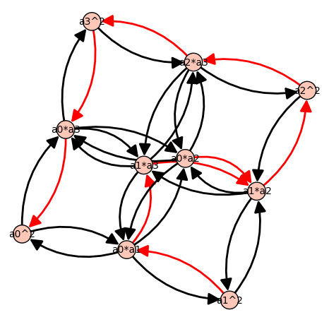
[(a0, a1, a2), (a0, a3, a1), (a1, a0, a1), (a1, a2, a2), (a2, a3, a2), (a2, a3, a3), (a3, a0, a0), (a3, a0, a3), (a3, a2, a1)]
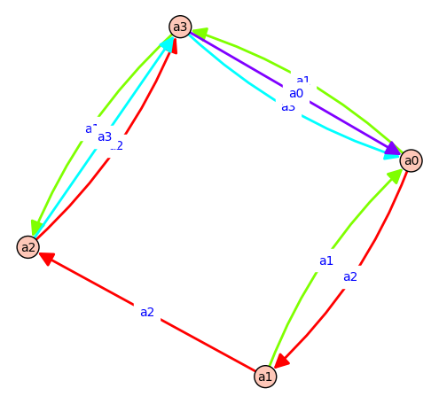
[(a0*a1, a0*a2, (1, (a1, a2), a0)), (a1^2, a0*a1, (2, (a1, a0), a1)), (a0*a2, a1*a2, (1, (a0, a1), a2)), (a1*a2, a2^2, (1, (a1, a2), a2)), (a2^2, a2*a3, (2, (a2, a3), a2)), (a0*a3, a0^2, (1, (a3, a0), a0)), (a1*a3, a0*a1, (1, (a3, a0), a1)), (a2*a3, a3^2, (1, (a2, a3), a3)), (a3^2, a0*a3, (2, (a3, a0), a3))]
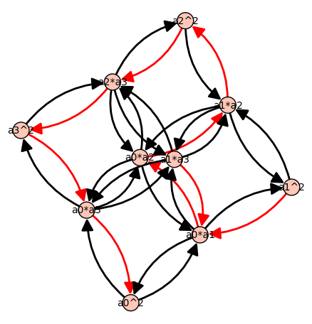
[(a0, a1, a2), (a1, a0, a1), (a1, a2, a0), (a1, a2, a2), (a2, a3, a2), (a2, a3, a3), (a3, a0, a0), (a3, a0, a1), (a3, a0, a3)]
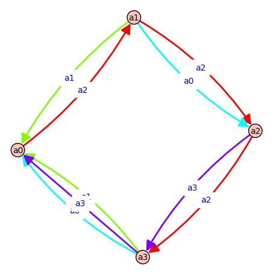
[(a0*a1, a0*a2, (1, (a1, a2), a0)), (a1^2, a0*a1, (2, (a1, a0), a1)), (a0*a2, a1*a2, (1, (a0, a1), a2)), (a1*a2, a2^2, (1, (a1, a2), a2)), (a2^2, a2*a3, (2, (a2, a3), a2)), (a0*a3, a0^2, (1, (a3, a0), a0)), (a1*a3, a1*a2, (1, (a3, a2), a1)), (a2*a3, a3^2, (1, (a2, a3), a3)), (a3^2, a0*a3, (2, (a3, a0), a3))]
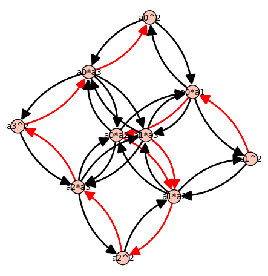
[(a0, a1, a2), (a1, a0, a1), (a1, a2, a0), (a1, a2, a2), (a2, a3, a2), (a2, a3, a3), (a3, a0, a0), (a3, a0, a3), (a3, a2, a1)]
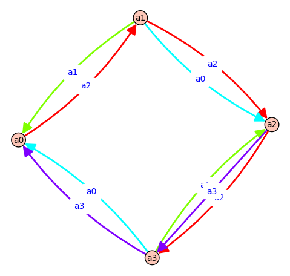